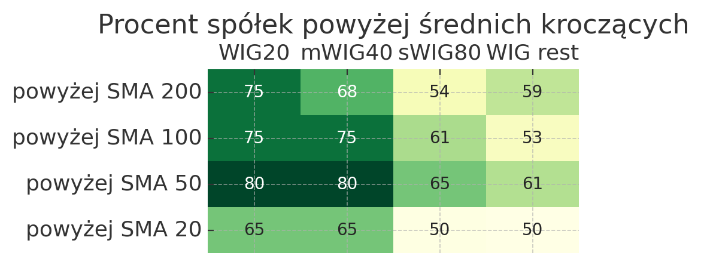
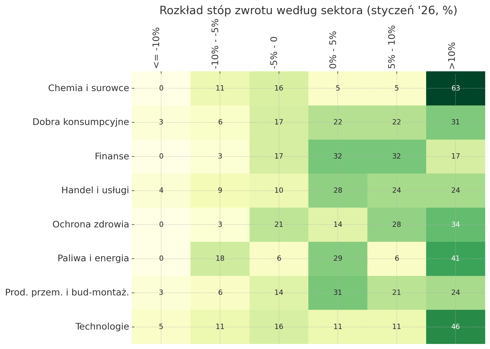
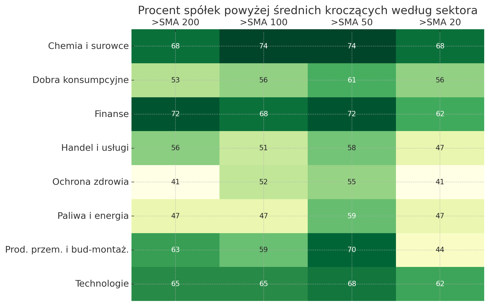

Rok 2025 rozbudził apetyty inwestorów na GPW. Za nami pierwszy miesiąc nowego roku, a w nim wciąż spora dynamika niezależnie od segmentu, giełdowi ulubieńcy spoza głównych indeksów, ale jednocześnie osłabione wskaźniki wolumenu i trendu.
Stopy zwrotu i wolumen
| Indeks | WIG20 | mWIG40 | sWIG80 | WIG rest | Razem | ||||
|---|---|---|---|---|---|---|---|---|---|
| liczba | % | liczba | % | liczba | % | liczba | % | liczba | |
| Stopa zwrotu | |||||||||
| Duży spadek (<= 10%) | 0.0 | 0.0 | 1.0 | 2.5 | 3.0 | 3.75 | 3.0 | 1.62 | 7 |
| Spadek (-10% - -5%) | 4.0 | 20.0 | 2.0 | 5.0 | 2.0 | 2.50 | 15.0 | 8.10 | 23 |
| Lekki spadek (-5% - 0%) | 4.0 | 20.0 | 2.0 | 5.0 | 13.0 | 16.25 | 29.0 | 15.66 | 48 |
| Lekki wzrost (0% - 5%) | 1.0 | 5.0 | 8.0 | 20.0 | 24.0 | 30.00 | 46.0 | 24.84 | 79 |
| Wzrost (5% - 10%) | 6.0 | 30.0 | 10.0 | 25.0 | 18.0 | 22.50 | 36.0 | 19.44 | 70 |
| Duży wzrost (> 10%) | 5.0 | 25.0 | 17.0 | 42.5 | 20.0 | 25.00 | 56.0 | 30.24 | 98 |
| Razem | 20.0 | 100.0 | 40.0 | 100.0 | 80.0 | 100.00 | 185.0 | 99.90 | 325 |
| Indeks | WIG20 | mWIG40 | sWIG80 | WIG rest | Razem | ||||
|---|---|---|---|---|---|---|---|---|---|
| liczba | % | liczba | % | liczba | % | liczba | % | liczba | |
| Stopa zwrotu | |||||||||
| Duży spadek (-30% - -15%) | 0.0 | 0.0 | 0.0 | 0.0 | 0.0 | 0.0 | 1.0 | 0.54 | 1 |
| Spadek (-15% - 0%) | 8.0 | 40.0 | 5.0 | 12.5 | 18.0 | 22.5 | 46.0 | 24.84 | 77 |
| Neutralnie / lekki wzrost (0% - 20%) | 12.0 | 60.0 | 31.0 | 77.5 | 54.0 | 67.5 | 112.0 | 60.48 | 209 |
| Duży wzrost (20% - 60%) | 0.0 | 0.0 | 4.0 | 10.0 | 6.0 | 7.5 | 23.0 | 12.42 | 33 |
| Ekstremalny wzrost (> 60%) | 0.0 | 0.0 | 0.0 | 0.0 | 2.0 | 2.5 | 3.0 | 1.62 | 5 |
| Razem | 20.0 | 100.0 | 40.0 | 100.0 | 80.0 | 100.0 | 185.0 | 99.90 | 325 |
| Indeks | WIG20 | mWIG40 | sWIG80 | WIG rest | Razem | ||||
|---|---|---|---|---|---|---|---|---|---|
| liczba | % | liczba | % | liczba | % | liczba | % | liczba | |
| Zmiana % wolumenu M:M | |||||||||
| Znaczny spadek (<= -20%) | 4.0 | 20.0 | 12.0 | 30.0 | 28.0 | 35.00 | 74.0 | 39.96 | 118 |
| Umiarkowany spadek (-20% - 0%) | 6.0 | 30.0 | 5.0 | 12.5 | 7.0 | 8.75 | 20.0 | 10.80 | 38 |
| Umiarkowany wzrost (0% - 20%) | 2.0 | 10.0 | 10.0 | 25.0 | 16.0 | 20.00 | 18.0 | 9.72 | 46 |
| Znaczny wzrost (20% - 75%) | 7.0 | 35.0 | 7.0 | 17.5 | 14.0 | 17.50 | 32.0 | 17.28 | 60 |
| Ekstremalny wzrost (> 75%) | 1.0 | 5.0 | 6.0 | 15.0 | 15.0 | 18.75 | 41.0 | 22.14 | 63 |
| Razem | 20.0 | 100.0 | 40.0 | 100.0 | 80.0 | 100.00 | 185.0 | 99.90 | 325 |
Z 325 analizowanych spółek 78 zakończyło styczeń ze spadkiem, z czego tylko 7 z wynikiem niższym niż -10%. Spośród indeksów najlepiej wypadają spółki z mWIG40 - aż 42,5% wzrosło o ponad 10%. Na drugim miejscu w tej materii znajdują się spółki WIG spoza trzech głównych indeksów. Tutaj nieco ponad 30% podmiotów znalazło się w grupie najwiekszych wzrostów.
Nieco inaczej, niekiedy niejednoznacznie prezentują się rozkłady wolumenów w ujęciu miesiąc do miesiąca. W przypadku WIG20, obroty na połowie spółek rosły, a połowie spadały. Spółki mid-cap to z kolei dużo bardziej przekonujący wynik: aż 87,5% z wyższym średnim dziennym wolumenem (a 42,5% ze wzrostem powyżej 10%). Nieco słabiej miała się sytuacja w sWIG80 i WIG rest, przy czym wciaż wolumen rósł w przypadku ponad 70% spółek.
Najlepsze i najgorsze spółki i sesje
| Nazwa | Zmiana % | Wol do Wol SMA10 | Sektor | Indeks | |
|---|---|---|---|---|---|
| Data | |||||
| 2026-01-15 | WOODPCKR | 37.8571 | 410.81 | Technologie | WIG rest |
| 2026-01-07 | CREEPYJAR | 37.7672 | 581.09 | Handel i usługi | sWIG80 |
| 2026-01-23 | MEDINICE | 32.1429 | 115.28 | Ochrona zdrowia | WIG rest |
| 2026-01-21 | PURE | 31.8002 | 613.36 | Ochrona zdrowia | WIG rest |
| 2026-01-19 | WASKO | 27.5510 | 93.21 | Technologie | WIG rest |
| 2026-01-02 | BUMECH | 26.9663 | 262.70 | Prod. przem. i bud-montaż. | sWIG80 |
| 2026-01-09 | ASMGROUP | 26.4368 | 480.16 | Handel i usługi | WIG rest |
| 2026-01-16 | WOODPCKR | 26.4249 | 356.30 | Technologie | WIG rest |
| 2026-01-02 | PASSUS | 25.5319 | 399.10 | Technologie | WIG rest |
| 2026-01-20 | MEDINICE | 25.5297 | 326.98 | Ochrona zdrowia | WIG rest |
| Nazwa | Zmiana % | Wol do Wol SMA10 | Sektor | Indeks | |
|---|---|---|---|---|---|
| Data | |||||
| 2026-01-26 | SILVAIR-REGS | -21.4286 | 820.38 | Technologie | WIG rest |
| 2026-01-26 | PURE | -20.7048 | 415.35 | Ochrona zdrowia | WIG rest |
| 2026-01-20 | WOODPCKR | -12.2807 | 88.74 | Technologie | WIG rest |
| 2026-01-28 | URTESTE | -11.3960 | 102.81 | Ochrona zdrowia | WIG rest |
| 2026-01-08 | ANSWEAR | -11.0280 | 556.64 | Handel i usługi | WIG rest |
| 2026-01-30 | KGHM | -10.7018 | 117.79 | Chemia i surowce | WIG20 |
| 2026-01-22 | MOJ | -10.5263 | 461.92 | Prod. przem. i bud-montaż. | WIG rest |
| 2026-01-23 | BIOPLANET | -10.3352 | 83.06 | Handel i usługi | WIG rest |
| 2026-01-20 | CEZ | -10.1604 | 511.21 | Paliwa i energia | WIG rest |
| 2026-01-26 | MEDINICE | -10.0996 | 35.32 | Ochrona zdrowia | WIG rest |
| Nazwa | Zmiana % | Średni wolumen M:M | Sektor | Indeks | |
|---|---|---|---|---|---|
| Data | |||||
| 2026-01-01 | MEDINICE | 131.1765 | 164.860 | Ochrona zdrowia | WIG rest |
| 2026-01-01 | WASKO | 71.7703 | 349.962 | Technologie | WIG rest |
| 2026-01-01 | WOODPCKR | 68.7259 | 468.341 | Technologie | WIG rest |
| 2026-01-01 | DATAWALK | 64.8885 | 103.410 | Technologie | sWIG80 |
| 2026-01-01 | CREOTECH | 60.9375 | 118.556 | Technologie | sWIG80 |
| 2026-01-01 | URTESTE | 57.9487 | 31.957 | Ochrona zdrowia | WIG rest |
| 2026-01-01 | CREEPYJAR | 53.5000 | 533.011 | Handel i usługi | sWIG80 |
| 2026-01-01 | QNATECHNO | 51.8519 | 539.298 | Technologie | WIG rest |
| 2026-01-01 | INC | 48.5149 | 80.473 | Finanse | WIG rest |
| 2026-01-01 | PASSUS | 47.3404 | 291.814 | Technologie | WIG rest |
| Nazwa | Zmiana % | Średni wolumen M:M | Sektor | Indeks | |
|---|---|---|---|---|---|
| Data | |||||
| 2026-01-01 | SILVAIR-REGS | -27.6042 | 847.485 | Technologie | WIG rest |
| 2026-01-01 | CDRL | -12.7907 | 143.343 | Dobra konsumpcyjne | WIG rest |
| 2026-01-01 | ANSWEAR | -12.2605 | 112.433 | Handel i usługi | WIG rest |
| 2026-01-01 | SYGNITY | -12.1076 | 96.801 | Technologie | sWIG80 |
| 2026-01-01 | MIRBUD | -11.4035 | 4.030 | Prod. przem. i bud-montaż. | mWIG40 |
| 2026-01-01 | CIGAMES | -11.0266 | 5.421 | Handel i usługi | sWIG80 |
| 2026-01-01 | STALEXP | -10.3175 | 98.604 | Prod. przem. i bud-montaż. | sWIG80 |
| 2026-01-01 | BORYSZEW | -9.7179 | 21.942 | Chemia i surowce | sWIG80 |
| 2026-01-01 | CEZ | -9.6120 | 167.391 | Paliwa i energia | WIG rest |
| 2026-01-01 | SPYROSOFT | -9.4077 | 90.867 | Technologie | WIG rest |
W sekcji wzrostów i spadków sesyjnych dominują przede wszystkim spółki małe, spoza trzech głównych indeksów. Dwukrotnie w zestawieniu TOP10 wzrostów sesyjnych znajdują sie Woordpecker i Medinice. Najwyższy jednosesyjny wzrost należy do pierwszej z wymienionych spółek, jest to wartość +37,86% z 15 stycznia.
Podmioty wymienione w pierwszej sekcji pojawiają się także w najwiekszych spadkach jednosesyjnych. I tak przykładowo Woodpecker zaliczył obsunięcie na poziomie 12,28% 20 stycznia. Największy spadek to natomiast -21,43% w przypadku spółki Silvair-regs.
Uwzględniając cały styczeń, aż dziewięć spółek wzrosła o ponad 50%, zaś zdecydowany rekord należy do spółki Medinice (+131%), co ma swoje korzenie w fundamentalnych wiadomościach związanych ze sprzedażą autorskiego projektu spółki. Jeśli chodzi o styczniowych maruderów, zdecydowanie in minus wyróżnia się Silvair-regs (spadek o 27,60%). Co ważne, drugi w rankingu najmocniej rosnących CDRL osunął się już “tylko” o 12,79%.
Wskaźniki techniczne

| Indeks | WIG20 | mWIG40 | sWIG80 | WIG rest |
|---|---|---|---|---|
| Odległość % od ATH200 | ||||
| 75-100% | 0.0 | 0.0 | 0.00 | 0.54 |
| 50-75% | 5.0 | 0.0 | 1.27 | 4.89 |
| 50-25% | 5.0 | 20.0 | 16.46 | 20.65 |
| 25-15% | 10.0 | 10.0 | 25.32 | 21.20 |
| 15-5% | 30.0 | 12.5 | 31.65 | 28.26 |
| 5-0% | 50.0 | 57.5 | 25.32 | 24.46 |
| Indeks | WIG20 | mWIG40 | sWIG80 | WIG rest |
|---|---|---|---|---|
| supertrend | ||||
| lowerband | 65.0 | 75.0 | 70.0 | 68.11 |
| upperband | 35.0 | 25.0 | 30.0 | 31.89 |
*wartości jako % spółek w danym indeksie będącym na zakończenie badanego okresa w trendzie wzrostowym (lowerband) lub spadkowym (upperband)
Zaraportowane za styczeń wzrosty z pewnością nie w pełni odzwierciedlają krajobraz, jaki gościł na giełdzie przy okazji końcówki miesiąca. To widać dobrze przy wskaźnikach technicznych. Analiza % spółek w danym indeksie znajdujących powyżej średnich kroczących 200/100/50/20 sesyjnych wskazuje jasno, że lokalnie szczyt wzrostów przypadał na okres grudnia (stąd powyżej SMA50 w każdym z indeksów znajduje się najwięcej spółek). Natomiast średnia krótkoterminowa (20 sesyjna) dostarcza najsłabszych ważności sposórd całej matrycy. Względem SMA50, w przypadku WIG20, mWIG40 i sWIG80 wyniki są o 15 punktów procentowe słabsze. Spółki z WIG-rest natomiast o 11, co może zwiastować zmieniający się układ na kolejne okresy.
Interesująco na koniec stycznia przedstawiała się także struktura spółek według odległości procentowej od 200-sesyjnego maksimum. W przypadku WIG20 50% jest na poziomie tej wartości, lub maksymalnie 5% niżej. W przypadku mWIG40 ta statystyka to z kolei 57,5%. W przypadku WIG rest i sWIG80 spółki rozkładają się bardziej równomiernie, lecz w obrębie przedziałów do 50% od ATH200.
Perspektywa sektorowa




Wyniki styczniowe z perspektywy indeksów nie dały skutecznej odpowiedzi w której części rynku szukać największej dynamiki. Więcej wiedzy w tym aspekcie daje spojrzenie przez pryzmat sektorów. Widać przede wszystkim siłę spółek chemicznych i surowcowych (aż 63% wzrosło o ponad 10% w styczniu). W drugiej kolejności warto wskazać spółki technologiczne, jednak tu analogiczny wzrost zanotowało 46% podmiotów. Co ciekawe dobre wyniki spółek z pierwszego sektora nie mają odzwierciedlenia w wolumenie (aż 32% sektora odnotowało ponad 20% spadek średniego dziennego wolumenu miesiąc do miesiąca). Inaczej ma się natomiast segment technologiczny, tu największą, bo 38-procentową grupą są spółki z rosnącym wolumenem o 75%. Co również rzuca się w oczy to 47% spółek z sektora paliwowo-energetycznego ze spadającym wolumenem o ponad 20%.
Jeśli chodzi o matrycę średnich kroczących, tutaj mamy odzwierciedlenie analogicznej, przedstawionej z perspektywy indeksów. W przypadku każdego segmentu zauważalny jest spadek liczby spółek pomiędzy pomiędzy średnią 50 i 20 sesyjną. Obronną ręką wychodzą wspomniane wcześniej chemia i serowce oraz technologie (nieznaczne spadki o 6 punktów procentowych). Po drugiej stronie słabnące spółki z sektorów takich jak handel, ochrona zdrowia, paliwa i energia,a przede wszystkim produkcja przemysłowa i budowlano montażowa (tu w przypadku SMA50 aż 70% spółek jest powyżej, zaś w przypadku SMA 20 już tylko 44%).
Na zakończenie
Pierwszy miesiąc 2026 roku, podobnie jak poprzednie okresy, zagwarantowały wiele dobrego inwestorom, szczególnie w pierwszej części. Istotne wzrosty zanotowały zarówno blue-chips, jak i spółki o mniejszej kapitalizacji, przy czym na znaczeniu zyskały przede wszystkim konkretne sektory - chemia, surowce i technologie. Forma końcówki stycznia wyrażona matrycą średnich kroczących daje natomiast ostrzeżenie. Co najmniej delikatne schłodzenie nie minęło żadnego sektora, przy czym najwieksza lampka ostrzegawcza zapala się przy spółkach budolwanych, handlowych i związanych z ochroną zdrowia.